Алгоритмы получения текстур игры Caesar III© и отрисовки города разобраны, осталась самая «сладкая» часть, которая притягивает «древнеримских архитекторов» уже больше 15 лет — игровая логика. Используя различные подходы к анализу игры, выношу на ваш суд результат этого небольшого исследования. Я заранее прошу прощения за большую статью, но, как говорится, слов из песни не выкинешь. В заключении будет несколько слов о судьбе исходников, восстановленных из исполняемого файла оригинальной игры.
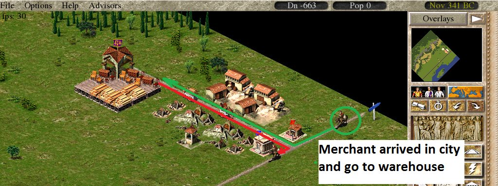
Немного истории Игра написана на языке Си, и доступна для ОС Windows и Мac. Официальный релиз состоялся в октябре 1998 года. Вероятнее всего для Windows игра была скомпилирована в среде Visual Studio 97, 6 студия еще не набрала на тот момент своей популярности. В 1999 году игру обновили до версии 1.0.0.3, собранной уже на Visual Studio 6, которая и получила наибольшее распространение, позже был выпущен патч 1.1 (с3 1.0.1.0) для англоязычных версий игры.
Date compiled: Fri, September 3, 1999, 7:31:17 AM Linker version: 6.0 Machine type: Intel 386 or later processors and compatible processors PE format: PE32 Subsystem: The Windows graphical user interface (GUI) subsystem Min OS: Windows 95 Min OS version: 4.0 Subsystem version: 4.0 File version: 0.0
Также поклонниками игры были модифицированы исполняемые файлы для запуска на экранах с высоким разрешением.
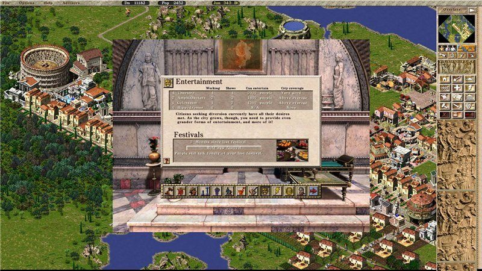
Игра использует графический движок второй части, есть также скриншоты из промежуточной(может отладочной) версии, где видны элементы старого графического оформления.
Caesar II
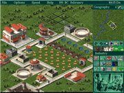
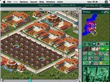
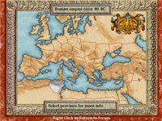
Caesar III(Alpha) Обратите внимание на дорогу, рыбацкие лодки и склад.
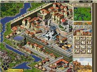
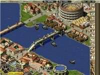
Caesar III(Final)
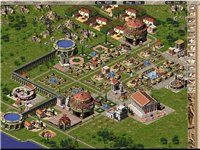
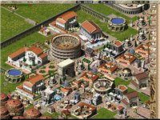
А теперь более предметно Начну с того, что в игре многие переменные жестко прописаны в коде в виде «магических чисел», приведенные примеры кода взяты из каталога с3_rev, исходники компилируются и запускаются в режиме отладки, можно по шагам просмотреть логику. Сопровождением занимается, судя по нику, наш соотечественник, который допилил исходники до рабочего состояния. Наши доблестные локализаторы, когда русифицировали игру, отредактировали бинарный код исполняемого файла, заменив c3.eng на с3.rus, попутно сломав совместимость с вышедшими позже патчами.
Показать код
Код функции main(восстановленный)int main(int argc, char* argv[] ) { int result; // eax@2 signed int v5; // [sp+4Ch] [bp-20h]@7 struct tagMSG Msg; // [sp+50h] [bp-1Ch]@21 HINSTANCE hInstance = GetModuleHandle(0); byte_6606BC = 0; if ( fun_loadSettings() ) { if ( fun_readLanguageTextFiles("c3.eng", "c3_mm.eng") ) { fun_loadDefaultNames(); fun_logDebugMessage("OK :Game text loaded.", 0, 0); if ( fun_setupMainWindow(hInstance) ) {} .... //some code } } }Текстовые ресурсы/Локализация Большая часть текста игры, за исключением текстовых данных для миссий, находится в файлах C3.eng/C3_mm.eng Файл С3.eng содержит описания строений, событий, жителей и т.д. Он состоит из заголовка, длиной 28 байт, и таблицы индексов, длиной 8000 байт. В таблице индексов содержатся смещения, по которым находятся текст для выбранного индекса. Алгоритм получение текста из файла локализации таков, чтобы получить текст, например, для заголовка окна советника по образованию с индексом TITLE_ADVISOR_EDUCATION(16), следует выбрать 16-ый элемент из массива индексов и по полученному смещению прочитать символы до завершающего 0.
Показать код
Описание заголовка и элемента таблицы индексовstruct C3EngHeader { char tag[16]; //описание файла int numGroups ; //количество групп в файле int numStrings ; //колическтво строк в файле int unknown ; }; struct C3EngIndexEntry { int offset; //смещение до строки int inUse; };Пользовательский интерфейс Размеры элементов пользовательского интерфейса, за исключением кнопок, прописаны в коде. Поэтому вы не можете потаскать информационное окно или справку. Сперва рисовался фон окна, а затем сопуствующие ему элементы.
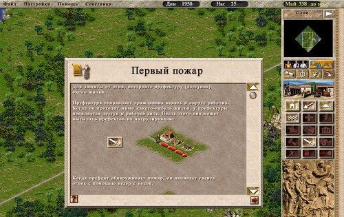
Показать код
Вот например обработка нажатия в области скролбараint fun_dialogFile_handleScrollbarClick() { signed int result; // eax@2 int v1; // ST60_4@15 int v2; // [sp+4Ch] [bp-10h]@5 int v3; // [sp+50h] [bp-Ch]@13 if ( filelist_numFiles > 12 ) { if ( mouse_isLeftClick ) { v2 = filelist_numFiles - 12; if ( mouseclick_x >= screen_640x480_x + 464 ) { if ( mouseclick_x <= screen_640x480_x + 496 ) { if ( mouseclick_y >= screen_640x480_y + 145 ) { if ( mouseclick_y <= screen_640x480_y + 300 ) { v3 = mouseclick_y - (screen_640x480_y + 145); if ( mouseclick_y - (screen_640x480_y + 145) > 130 ) v3 = 130; v1 = fun_getPercentage(v3, 130); filelist_scrollPosition = fun_adjustWithPercentage(v2, v1); window_redrawRequest = 1; result = 1; } else {result = 0;} }else{result = 0;} }else{result = 0;} }else{result = 0;} }else{result = 0;} }else {result = 0;} return result; }Кнопки в игре имеют фиксированную высоту и рисуются с использованием трех текстур, средняя текстура повторяется для заполнения тела кнопки. Например кнопка в обычном стостоянии.
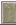
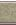
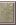
Окна рисуются по следующему алгоритму: рисуются края окна спецальными текстурами, центр заполняется бесшовной текстурой
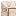
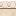
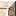
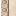
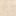
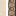
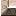
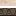
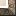
Маленькие детали огромного механизма Игра состоит из большого числа подсистем (доступность воды, состояние зданий, образование, развлечения и др.), каждая из которых при детальном рассмотрении оказывается очень простой, и описание её функционирования укладывается в несколько абзацев. Совместная работа этих «шестеренок» выдает увлекательный геймплей с хорошим балансом. Следует отметить, что между собой эти подсистемы практически не взаимодействуют(расположение театра не влияет на соседнюю школу или рынок, доктора ничего не знают о проходящих мимо актерах). Общей точкой влияния являются дома, которые накапливают эффекты подсистем: чем большее их количество становится доступно дому, тем выше его уровень. Уровень дома в абсолютном выражении сводится к объему выплачиваемых налогов и число доступных работников.
Маршруты
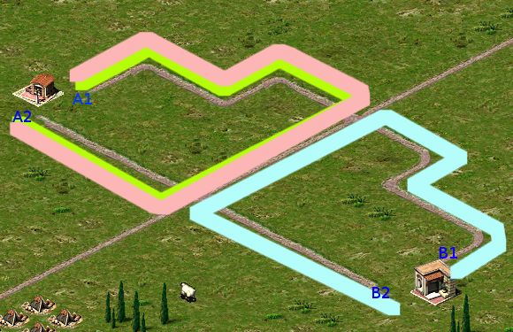
Маршруты разных типов горожан различаются, например маршрут префекта (инженера) будет состоять из пути A1-A2-A1, даже если точка А2 находится в зоне входа в префектуру, после чего он вернется на базу, тогда как парикмахер завершит обход территории, достигнув точки B2. Обслуживающий персонал передвигается исключительно по дорогам (мостам, воротам, амбарам, северным тайлам складов, садам и территориям при фортах). Враги и дикие животные не могут проходить сквозь ворота. Купцы и мега-носильщики могут передвигаться по «бездорожью», но предпочитают передвигаться по дороге до пункта назначения, если возможно. Носильщики не могут ходить через сады и фортовые территории.
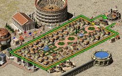
Здания имеют точку выхода, которая может не совпадать с точкой входа. Приоритет появления смещен вниз, входной приоритет — вверх, между точками входа и выхода может быть очень длинный путь.
Ниже я привел максимальную протяженность маршрутов жителей города, переключение между коротким и длинным маршрутом происходит при разных условиях, не все я еще разобрал. Торговка, например, включает длинный маршрут, если рядом с рынком стоит амбар. Тип жителя Длина машрута длинный/короткий(в тайлах) Префект, Инженер 52/43 Актер, Гладиатор, Укротитель, Сборщик налогов 43/35 Жрец, Доктор, Хирург, Учитель, Торговка, Банщица, Парикмахер 35/26
Маршрут обхода просчитывается перед выходом в район. Перед началом выбора «оптимального» маршрута, строится карта возможных путей из точки выхода рабочего во все стороны распространения дорог. Далее каждый полученный путь проходится потайлово и здания в зоне досягаемости рабочего опрашиваются на предмет необходимости его услуг. По данному показателю выбирается тот маршут, на котором услуги рабочего более востребованы.
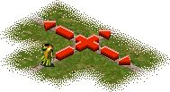
К примеру, префект пойдет в район с максимальным уровнем пожароопасности. Но сложность в том, что он не будет ходить к малым скоплениям домов, даже если там будет максимальный уровень пожара, а пойдет в большой район, в котором уровень пожаропасности еще допустим. Это происходит потому, что суммарный уровень в большом районе превысит этот показатель в маленьком районе. Тоже относится и к другим сервисным рабочим, т.к. алгоритм расчета важности пути унифицирован для использования разных типов сервиса.
Исключение составляет поведение торговки, которая при прокладке маршрута учитывает товары, находящиеся на рынке. На следующем изображении показаны возможные пути, по которым может пойти торговка, каждый перекресток увеливает число маршрутов для обработки. В конце будет выбран белый маршут, так как на нем будет продано максимальное количество товаров с рынка. При достижении конечной точки выбранного маршрута торговкой, если у неё не осталось товаров, будет выполнен поиск ближайшего маршрута до рынка, а если товары остались, то она пойдет обратно по тому же маршруту.
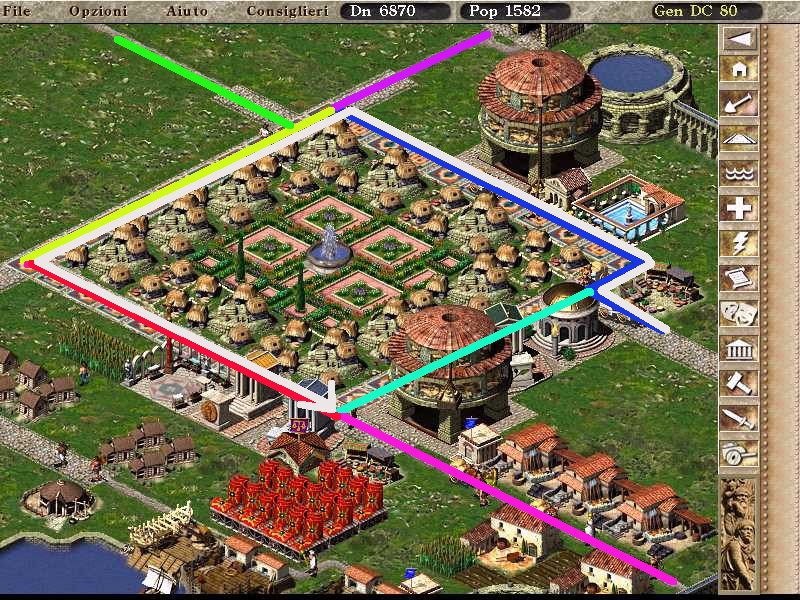
Эволюция домов Дома с уровнем ниже инсулы(Insula) размером в один тайл могут объединяться с соседями, тогда получается дом такого же уровня размерами 2х2 тайла. Дополнительным условием объединения домов является совпадение первых трех бит псевдослучайных чисел из массива byte minimap_info[26244], который используется при генерации миникарты, поэтому не на всех тайлах города хижины могли объединяться.
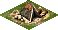
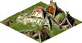
Далее при достижении определенного уровня, когда размер дома следующего уровня больше текущего, происходит захват соседней территории.
Medium insula -> Large insula (1×1 -> 2×2)
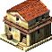
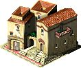
Medium villa -> Large villa (2×2 -> 3×3)
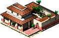
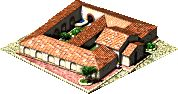
Medium palace -> Large palace (3×3 -> 4×4)
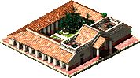
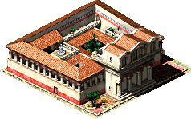
Доступными для расширения являются следующие тайлы (пустой участок, сад, одиночный дом ниже уровнем или такого же уровня). Расширение дома рарешается в четырех направлениях (север, запад, юг и восток)
Население города Население в городе делится по возрастам от 0 до 99 лет. Каждый дом содержит массив char peoples[100], который показывает сколько жителей и какого возраста находятся в этом доме ( индекс массива соотвествует возрасту жителей, значение элемента соответствует числу жителей данного возраста ). В начале каждого года элементы массива сдвигаются на один элемент, таким образом удаляются долгожители и добавляется ячейка для новорожденных. Вызываются функции, которые обсчитывают возможность появления детей в доме и естественную убыль населения дома от старости.
Показать код
Скрытый текстvoid fun_gametick_population() { ...//some code cityinfo_happiness_immigrationAmount[4517 * ciid] = 0; cityinfo_happiness_emigrationValue[4517 * ciid] = 0; if ( cityinfo_populationYearlyBirthsDeathsCalculationNeeded[4517 * ciid] ) { fun_populationAdvanceAgesOneYear(); fun_populationBirths(); fun_updatePopulationAfterBirthsDeaths(ciid); } fun_calculateNumberOfWorkers(); ....// some code }Потребление сервисов и ресурсов Дома потребляют ресурсы (еда, посуда, масло, мебель, вино) и сервисы(религия, здравоохранение, образование и др.). Потребление еды происходит раз в месяц из расчета 0.5 единицы еды на жителя дома, потребление остальных ресурсов происходит 2 раза в месяц по 1 единице на дом, без учета количества жителей. Потребление сервисов происходит каждый день по одной 1 ед. сервиса, дом любого уровня хранит не более 100 единиц каждого сервиса, поэтому требуется их постоянное обновление. Хранилище еды и ресурсов, напротив, зависит от уровня дома: чем больше дом, тем больше ресусов разных типов он может хранить, в игре дом закупает у торговки товар на следующие полгода.
Религия

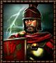
В игре пять богов (Церера, Нептун, Марс, Меркурий и Венера). Алгоритм подсчета настроения для всех один и тот же. Покрытие города считается по населению, а не по территории, т.е. все храмы могут стоять как угодно на отношение богов это не повлияет. От расположения храмов зависит настроение домов, которые обслуживают жрецы этих храмов. Процент покрытия расчитывает по следующей формуле
Базовое_значение = 100 * ( 500 * число_оракулов + 750 * работающих_малых_храмов + 1500 * работающих_больших ) / количество_людей. Под понятие «работающий», попадают те храмы, где есть хотя бы один работник.
Дополнительные факторы, влияющие на отношение божества. Фактор_фестиваля = 12 — max(40, месяцев_от_последнего_фестиваля_для_этого_Божества) Фактор_храмов = 50. Получит то божество, число храмов которого в городе максимально, если их несколько, то этот фактор сбрасывается у всех. Фактор_непочтения = -25. Получит то божество, у которого меньше всех храмов в городе. Если таких божеств несколько, то этот фактор сбрасывается у всех.
Венера не участвует в распределении бонусов. Наверно баг.
Итоговое_настроение = Базовое_значение + Фактор_фестиваля + Фактор_храмов + Фактор_непочтения.
Ограничения минимальных значений настроения в зависимости от населения города. Население Минимальное настроение 0-99 50 100-199 40 200-299 40 300-399 30 400-499 20 400-499 10 >500 0
Настроение богов Каждый игровой день (25 тиков) происходит подсчет настроения каждого из богов. У божества есть текущее настроение и истинное, при каждом обновлении текущее настроение приближается к истинному на 1 ед. Пример, мы чем то неугодили Марсу и не стремимся это исправить, текущее настроение Марса пусть будет равным 100, и истинное — 0. Каждый день текущее настроение бога войны будет снижаться на 1 ед. пока не достигнет 0. В игровом месяце 16 дней, получается, что наш город Марс покарает через (100 / 16), где-то через полгода игрового времени, может быть, потому что еще есть «священный рандом»( перед которым не всякий римский бог может устоять ).
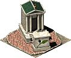
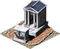
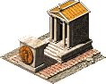
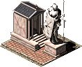
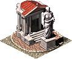
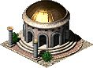
Показать код
Под спойлером я описал подсчет очков гнева (они отображаются в виде молний рядом с настроением божества в окне советника по религии, кто играл в Цезаря обязательно вспомнит) Скрытый текст if( god.mood < 50 ) { god.blessing = 0 god.blessingDone = 0 } if(god.mood > 50 ) { god.small_curse = 0 god.smallCurseDone = 0 } god_id = random( 7 ); if( god_id < 5 ) { current_god = romeGods[ god_id ] // (Ceres/Neptune/Mercury/Mars/Venus) if( current_god.mood >= 50 ) current_god.wrathPoints = 0; if( current_god.mood >= 9 and current_god.mood < 10 ) current_god.wrathPoints += 5; if( current_god.mood >= 10 and current_god.mood < 20 ) current_god.wrathPoints += 2; if( current_god.mood >= 20 and current_god.mood < 40 ) current_god.wrathPoints += 1; } current_god.wrathPoints = min( current_god.wrathPoints, 50) Каждый игровой месяц (16 * 25 = 900 тиков), выполняется дополнительная логика, которая определяет появления гнева и/или благословения богов. Скрытый текст if( god_id == [5, 6, 7] ) { //ищем самого гневливого бога, с максимальным число очков гнева или с настроением менее 40 или случайного, если не нашлось гневных current_god = find_least_happy_god(); if( current_god ) { if( current_god.mood > 100 and current_god.blessingDone == 0 ) { current_god.doBlessing() current_god.mood = 50 current_god.blessingDone = 1 } if( current_god.wrathPoints > 20 and current_god.smallCurseDone == 0 ) { current_god.doSmallCurse() current_god.smallCurseDone = 1 current_god.wrathPoints = 0 current_god.mood -= 12 } if( current_god.wrathPoints == 50 and current_god.lastFesivale > 3_months ) { current_god.doWrath() current_god.wrathPoints = 0 current_god.mood -= 30 } } }Фестивали/Настроение в городе

В игре доступно 3 типа фестивалей: малый, средний и большой. Фестиваль посвящен одному из богов, проведенный фестиваль влияет на отношение божества к городу. Формулы вычисления затрат на проведение фестиваля приведены в таблице. Тип Стоимость Вино Время подготовки Малый population / 20 + 10 — 2 месяца Средний population / 10 + 20 - 3 месяца Большой population / 5 + 40 population / 500 + 1 4 месяца
Помимо увеличения настроения божества, которому посвящен фестиваль, после его проведения также улучшается отношение горожан к правителю. За 12 месяцев можно провести 2 фестиваля, которые принесут увеличение настроения, следующие проведенные фестивали не дадут прироста настроения в городе. В таблице указаны значения, на которое увеличивается настроение в городе.
Тип Первый Второй Малый 7 2 Средний 9 3 Большой 12 5
Показать код
Финансы Максимальный долг города, при которой еще можно что-нибудь строить построить составляет -5000 денариев. Это условие проверяется при каждом действии связанном с финансами. Например при постройке дорогиvoid fun_drawBuildingGhostRoad() { ... //some code if ( cityinfo_treasury[4517 * ciid] <= -5000 ) cannotBuild = 1; if ( cannotBuild ) { sub_4D0B70(graphic_fire_almost, v2, v1 - iso_tile_half_height, (ColorMask) -1949); } ...//some code }Годовая зарплата рабочим, которую вы устанавливаете на экране советника по трудовым ресурсам составляет 1/10 от указанного значения в денариях. Число 30 означает выплату 3 денариев работнику в год, сделано это из-за того, в игре финансовые расчеты ведутся в целых числах.
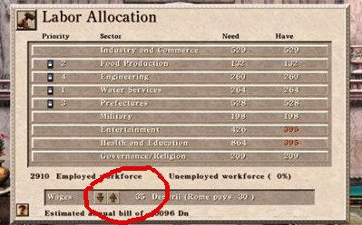
Каждый месяц происходит выплата зарплат рабочим, по простой формуле. Зп_в_денариях = (количество работников на конец месяца) * (зп_работника) / 10 / 12 Эта сумма забирается из казны города в никуда, для примера в «Тропико» деньги переходили в кошельки жителей, но это совершенно другая история.
Если город находится в долгах, т.е. сумма, отображаемая в верхнем меню, меньше 0, то город начинает выплачивать проценты Риму, своеобразный заем. Процентная ставка заема составляет 10% и вычитается из казны города каждый месяц.
выплата = (-денег_в_казне) * 10 / 100 / 12
При достижении 5000 долга в первый раз, Рим дает ссуду(зависит от миссии, обычно 10000дн), во второй раз сумма тоже может быть получена, но она уже учитывается как заем.
Налоги
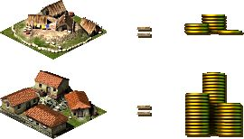
Каждый месяц дома в городе генерируют налог, который зависит от уровня дома и количества людей в нем проживающих. Налог с дома собирается когда мимо него проходит сборщик налогов, в начале нового года сумма за предыдущий год сгорает, если она не была собрана. Уровень налогов задается в конфигурационном файле c3_model.txt, также на уровень поступления налогов в городе влияет уровень сложности:
Уровень сложности Коэффициент Очень легко 300% Легко 200% Нормально 150% Сложно 100% Очень сложно 75%
Финальная формула подсчета налогов с дома выглядит так. ВсегоНалогов (Dn) = (налоговая_база / 2) * (процентная_ставка_города) / ( 12 * 100 (
Подать империи В конце года город отправляет часть дохода в Рим, выплата зависит от прибыли и числа жителей в городе. В игре под прибылью понимается разность между доходом и тратами. Ставка подати составляет 25%, если город в долгах, то подать не выплачивается, но уменьшается благоволение императора. Составляющие дохода Составляющие расходов Пожертвования Строительство Экспорт товаров Импорт товаров Проценты по заему Жалование правителя Остальное Зарплаты
Также минимальное значение подати определяется населением города. Население Нет прибыли/Есть прибыль 0-500 0/50 501-1000 0/150 1001-2000 100 /225 2001-3000 200 /300 3001-5000 200 /400 5000+ 200 /500
Благоволение императора
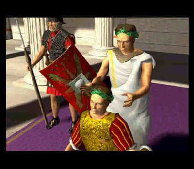
Большую роль в благополучном завершении миссии играет отношение императора к правителю и рейтинги города. Наибольшее влияние на настроение императора имеют такие параметры как «прибыльность города» и выполнение/игнорирование запросов императора.
Подарки значительно увеличивают мнение императора о Вас, но их влияние серьезно снижается при частых подарках. При подсчете изменения благоволения учитываются все сделанные подарки за последние 12 месяцев, они преведены в таблице. Номер подарка Скромный Дорогой Превосходный 1 3 5 10 2 1 3 5 3 0 1 3 4 0 0 1 5+ 0 0 0
Выполнение запросов, в заданное императором время, дает определенное повышение благоволения. При выполнении запроса позже установленного цезарем срока, вы получите только половину награды, а в случае игнорирования и вовсе потеряете уважение на 8 единиц: 3 единицы будут потеряны при невозможности выполнить запрос в указанный срок, еще 5 будут сняты при игнорировании запроса в течение 24 месяцев после крайнего срока.
Кроме сюжетных запросов и подарков, обновление значения благоволения выполняется в начале каждого года и зависит от следующих факторов: Базовое изменение = -2 Успешная выплата подати = +1 если выплачивается успешно, -3,-5 и -8, если подать не выплачивалась один, два и более двух лет соответсвенно. Жалование = +1 если жалование меньше жалования текущего уровня правителя, и -1 за каждый ранг свыше вашего уровня События = зависит от миссий, например +5 при достижении населения 1000 жителей
Рейтинг культуры
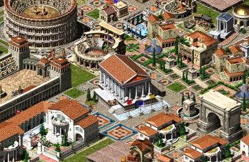
Рейтинг культуры в игре является собирательным рейтингом, по состоянию которого можно судить о привлекательности города. Он состоит из уровня покрытия города театрами, храмами, школами, академиями и библиотеками. Косвенно, по наличию образовательной составляющей(уровень культуры больше 30), можно понять что в городе есть зажиточные граждане.
Рейтинг_культуры = Рейтинг_театров + Рейтинг_храмов + Рейтинг_библиотек + Рейтинг_школ + Рейтинг_академий
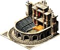
Значение рейтинга театров соответствует отношению вместительности театров к числу жителей без учета их расположения. Рейтинг_театров = 500 * число_работающих_театров / население. В соотвествие с этим покрытием выбирается рейтинг. Покрытие Очки культуры 0-30% 0 31-50% 3 51-70% 8 71-85% 12 86-99% 18 100+% 25
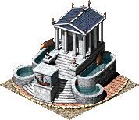
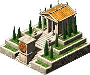
Значение рейтинга театров соответствует отношению вместительности храмов к числу жителей без учета их расположения. Рейтинг_храмов = 150 * Число_малых_храмов + 300 * Число_больших_храмов + 500 * Число_оракулов. Также как и с театрами, значение рейтинга выбирается из таблицы. Покрытие Очки культуры 0-30% 0 31-50% 3 51-70% 9 71-85% 14 86-99% 22 100+% 30
Образование
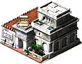
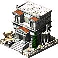
Школы приносят максимум 15 очков культуры, расчет производится по жителям школьного возраста, каждая школа вмещает 75 учеников. Академии добавляют 10 очков культуры, расчет производится по жителям студенческого возраста, академия обучает 100 студентов. Библиотекам остается 20 очков, которые рассчитываются по общему числу жителей, одна библиотека может обслуживать до 800 жителей. Зависимость очков культуры от уровня покрытия города приведены в таблице. Покрытие Школы Академии Библиотеки 0-30% 0 0 9 31-50% 1 1 2 51-70% 4 2 4 71-85% 6 4 8 86-99% 10 7 14 100+% 15 10 20
Ресурсы и производство
Основой экономики игры являются ресуры, некоторым ресурсам требуется обработка, так появляются простейшие производственные цепочки, например, железная шахта -> оружейная. Ресурсы в игре являются неисчерпаемыми, за исключением рыболовных мест, которые имеют конечное число рыбы.
Пшеница — первый ресурс, с которым Вас знакомит игра. В центральных провинциях пшеничные фермы эффективнее других ферм, но это не действует в северных и пустынных районах. Размещаются фермы на плодородной почве, которая на карте показывается желтыми всходами. Урожай будет отвозиться в амбар или на склад. Фермы, добывающие здания и мастерские работают по одной схеме, каждые 25 тиков( раз в игровой день) происходит обновление прогресса производства по следующей формуле: Формула расчета дневного прогресса производства productionRate - количество тележек с товаром в год при 100% загрузке numberWorkers - число работников на данный момент 12 * 16 - число месяцев * число игрвых дней maximumWorkers - максимальное число работников на этом производстве progress += 100 * ( productionRate * numberWorkers) / (12 * 16 * maximumWorkers ) При завершении производства создается носильщик с товаром, который доставит его в ближайщее хранилище. При невозможности доставить товар, он так и будет стоять возле производства. Если носильщик занят, а новый товар уже произведен, то производство останавливается до момента освобождения носильщика.
Хранение и распределение ресурсов
В хранении и распределении ресурсов участвуют два вида хранилищ: амбары и склады, амбары хранят только продукты и торговки с рынка получают товар из амбаров, склады сохраняют товары любого типа и могут продавать их купцам. Хранилища перестают принимать товар если количество работников менее половины, хранилища не участвуют в доставке товара, за исключением особого режима «получить товар», в этом случае хранилище начинает получать товары с других хранилищ, таким образом в игре можно создать цепочку перемещения товаров из одного района карты в другой.
Совокупность добычи ресурсов, переработки и сбыта товаров получилась достаточно проработанной. Небольшое число товаров не утомляет игрока микроменеджментом, а автоматизация большей части рутинных действий, таких как выбор мест складирования и распределения, оставляет правителю простор для стратегического планирования.
На этом моменте я, пожалуй закончу статью, за бортом остались такие темы как торговля между городами и военные действия, каждая из них довольно большая, да и материала еще недостаточно. Спасибо за внимание,
З.Ы. В завершении статьи хочу сказать, что поклонники игры наверняка могут добавить еще много моментов, которые я не нашел или не обратил внимание при восстановлении исходников оригинальной игры. Мне важно было получить общие представления об игровой логике, дабы не напортачить с балансом, так заботливо отполированным авторами оригинала. Что касается восстановленных исходников, терпения привести их к нормальному (чтобы просто компилировалось) виду не хватило, но нашелся добрый человек (AntonBaracuda, github.com/AntonBaracuda/opencaesar3/c3_rev), который завершил эту действительно нелегкую работу. По указанному адресу вы найдете исходники и частично разнесенные по файлам структуры и некоторые функции, все это компилируется и запускается, в отладчике можно пройти первые функции.
← Все статьи